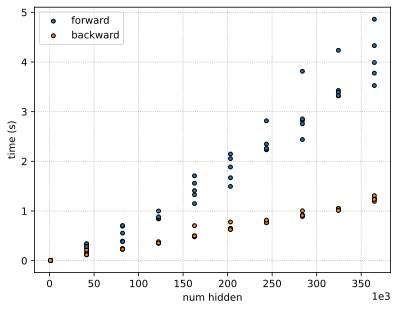

Appendix: Benchmarking
Recall BP has time and memory complexity that is linear in network size. This assumes each node executes in constant time and the outputs are stored. Moreover, the gradient should never be asymptotically slower than the function (assuming local gradient computation takes constant time). Testing this here empirically.
%config InlineBackend.figure_format = "svg"
from tqdm.notebook import tqdm
import time
import matplotlib.pyplot as plt
x = [Node(1.0)] * 3
network_size = []
fwd_times = {}
bwd_times = {}
for i in tqdm(range(10)):
nouts = [200] * (i + 1) + [1]
model = MLP(n_in=3, n_outs=nouts, activation="relu")
fwd_times[i] = []
bwd_times[i] = []
for j in range(5):
t0 = time.process_time()
pred = model(x)
t1 = time.process_time()
fwd_times[i].append(t1 - t0)
t0 = time.process_time()
pred.grad = 1.0
pred.backward()
t1 = time.process_time()
bwd_times[i].append(t1 - t0)
network_size.append(len(model.parameters()) + sum(nouts) + 3)
Show code cell source
for i, size in enumerate(network_size):
for j in range(5):
# add label once
if j == 0 and i == 0:
plt.scatter(size, fwd_times[i][j], color="C0", edgecolor="black", s=15, label="forward")
plt.scatter(size, bwd_times[i][j], color="C1", edgecolor="black", s=15, label="backward")
else:
plt.scatter(size, fwd_times[i][j], color="C0", edgecolor="black", s=15)
plt.scatter(size, bwd_times[i][j], color="C1", edgecolor="black", s=15)
plt.legend()
plt.xlabel("num hidden")
plt.ylabel("time (s)")
plt.ticklabel_format(axis="x", style="sci", scilimits=(3, 3))
plt.grid(linestyle="dotted")

Fig. Roughly linear time complexity in network size for both forward and backward passes.